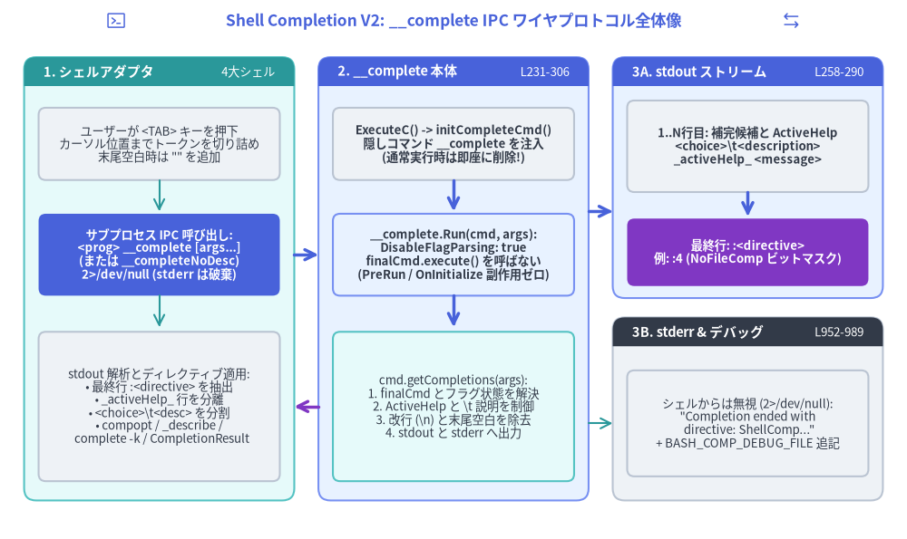
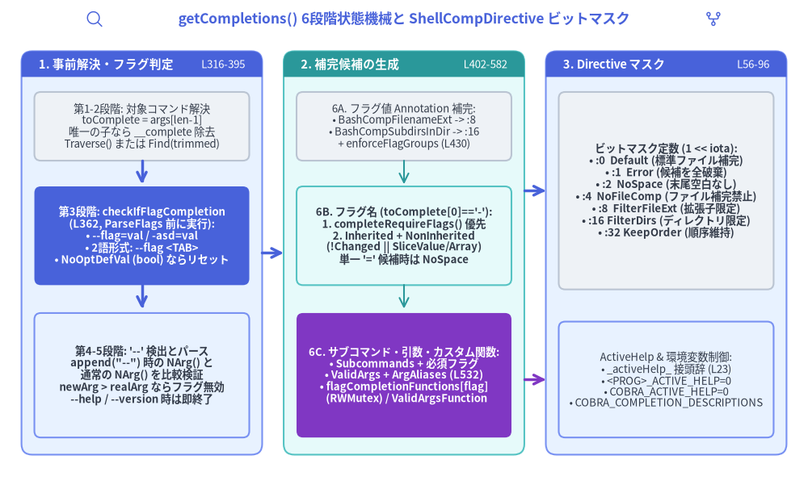

第5章: Shell Completion V2 エンジン — __complete プロトコル、getCompletions 状態機械と4大シェルスクリプト生成器
初期の補完スクリプト生成器（bash_completions.go、649 LOC）は、コマンドツリーやフラグ一覧を巨大な静的シェルスクリプトとして出力する方式をとっていました。これに対し、Cobra の Shell Completion V2 エンジン（completions.go, active_help.go, shell_completions.go — 計 1,181 LOC）および 4つの V2 シェルスクリプト生成器（bash_completionsV2.go, zsh_completions.go, fish_completions.go, powershell_completions.go — 計 1,438 LOC）は、補完ロジックの知能をすべてコンパイル済み Go バイナリ本体へ集約しています。ユーザーが <TAB> キーを押すたびに、シェルアダプタは隠しサブコマンド（<program> __complete [args...]）を IPC 呼び出しし、stdout から返却される構造化候補行と末尾の :<directive> ビットマスク整数を各シェルのネイティブ補完プリミティブへ変換します。

Source Code
from drawlib.canvas import save, setup
from drawlib.icons import phosphor
from drawlib.lines import line
from drawlib.shapes import rectangle
from drawlib.smartarts import Panel
from drawlib.styles import Styles
from drawlib.text import text
setup(width=188, height=112)
phosphor.terminal_window((24, 107.5), width=4.5, style=Styles.Primary)
text(
(94, 107.5),
"Shell Completion V2: __complete IPC ワイヤプロトコル全体像",
style=Styles.PrimaryBold.patch(text_size=12.5),
)
phosphor.arrows_left_right((164, 107.5), width=4.5, style=Styles.Primary)
# Panel 1: Shell Script Adapter (bash / zsh / fish / pwsh)
Panel(
"1. シェルアダプタ",
"4大シェル",
style=Styles.SecondaryNeutral,
header_style=Styles.SecondaryFlat,
text_style=Styles.WhiteBold.patch(text_size=10.5),
description_style=Styles.White.patch(text_size=9.5),
header_height=6.0,
).draw((5, 8), width=56, height=92)
rectangle(
(33, 82),
width=50,
height=15,
style=Styles.Neutral.patch(shape_r=1.5),
text="ユーザーが <TAB> キーを押下\nカーソル位置までトークンを切り詰め\n末尾空白時は \"\" を追加",
text_style=Styles.Dark.patch(text_size=9.5),
)
line((33, 74.5), (33, 68), arrow_head="->", style=Styles.Secondary)
rectangle(
(33, 59),
width=50,
height=17,
style=Styles.PrimaryFlat.patch(shape_r=1.5),
text="サブプロセス IPC 呼び出し:\n<prog> __complete [args...]\n(または __completeNoDesc)\n2>/dev/null (stderr は破棄)",
text_style=Styles.WhiteBold.patch(text_size=9.5),
)
line((33, 50.5), (33, 44), arrow_head="->", style=Styles.Secondary)
rectangle(
(33, 27.5),
width=50,
height=31,
style=Styles.Neutral.patch(shape_r=1.5),
text="stdout 解析とディレクティブ適用:\n• 最終行 :<directive> を抽出\n• _activeHelp_ 行を分離\n• <choice>\\t<desc> を分割\n• compopt / _describe /\n complete -k / CompletionResult",
text_style=Styles.Dark.patch(text_size=9.5),
)
# Panel 2: __complete Runtime Engine in Go Binary
Panel(
"2. __complete 本体",
"L231-306",
style=Styles.PrimaryNeutral,
header_style=Styles.PrimaryFlat,
text_style=Styles.WhiteBold.patch(text_size=10.5),
description_style=Styles.White.patch(text_size=9.5),
header_height=6.0,
).draw((66, 8), width=56, height=92)
rectangle(
(94, 82),
width=50,
height=15,
style=Styles.Neutral.patch(shape_r=1.5),
text="ExecuteC() -> initCompleteCmd()\n隠しコマンド __complete を注入\n(通常実行時は即座に削除!)",
text_style=Styles.DarkBold.patch(text_size=9.5),
)
line((94, 74.5), (94, 68), arrow_head="->", style=Styles.PrimaryBold)
rectangle(
(94, 59),
width=50,
height=17,
style=Styles.PrimaryNeutral.patch(shape_r=1.5),
text="__complete.Run(cmd, args):\nDisableFlagParsing: true\nfinalCmd.execute() を呼ばない\n(PreRun / OnInitialize 副作用ゼロ)",
text_style=Styles.DarkBold.patch(text_size=9.5),
)
line((94, 50.5), (94, 44), arrow_head="->", style=Styles.PrimaryBold)
rectangle(
(94, 27.5),
width=50,
height=31,
style=Styles.SecondaryNeutral.patch(shape_r=1.5),
text="cmd.getCompletions(args):\n1. finalCmd とフラグ状態を解決\n2. ActiveHelp と \\t 説明を制御\n3. 改行 (\\n) と末尾空白を除去\n4. stdout と stderr へ出力",
text_style=Styles.Dark.patch(text_size=9.5),
)
# Panel 3A: stdout Wire Stream
Panel(
"3A. stdout ストリーム",
"L258-290",
style=Styles.PrimaryNeutral,
header_style=Styles.PrimaryFlat,
text_style=Styles.WhiteBold.patch(text_size=10.5),
description_style=Styles.White.patch(text_size=9.5),
header_height=6.0,
).draw((127, 50), width=56, height=50)
rectangle(
(155, 81.5),
width=50,
height=19,
style=Styles.Neutral.patch(shape_r=1.5),
text="1..N行目: 補完候補と ActiveHelp\n<choice>\\t<description>\n_activeHelp_ <message>",
text_style=Styles.DarkBold.patch(text_size=9.5),
)
line((155, 72), (155, 67), arrow_head="->", style=Styles.PrimaryBold)
rectangle(
(155, 59.5),
width=50,
height=14,
style=Styles.AccentFlat.patch(shape_r=1.5),
text="最終行: :<directive>\n例: :4 (NoFileComp ビットマスク)",
text_style=Styles.WhiteBold.patch(text_size=9.5),
)
# Panel 3B: stderr & Debug Log
Panel(
"3B. stderr & デバッグ",
"L952-989",
style=Styles.Neutral,
header_style=Styles.DarkFlat,
text_style=Styles.WhiteBold.patch(text_size=10.5),
description_style=Styles.White.patch(text_size=9.5),
header_height=6.0,
).draw((127, 8), width=56, height=38)
rectangle(
(155, 24),
width=50,
height=22,
style=Styles.Neutral.patch(shape_r=1.5),
text="シェルからは無視 (2>/dev/null):\n\"Completion ended with\n directive: ShellComp...\"\n+ BASH_COMP_DEBUG_FILE 追記",
text_style=Styles.Dark.patch(text_size=9.5),
)
# Inter-panel connectors
line((61, 59), (66, 59), arrow_head="->", style=Styles.PrimaryBold)
line((66, 27.5), (61, 27.5), arrow_head="->", style=Styles.AccentBold)
line((122, 68), (127, 68), arrow_head="->", style=Styles.PrimaryBold)
line((122, 24), (127, 24), arrow_head="->", style=Styles.Secondary)
save()
1. 隠しコマンド __complete のエフェメラル注入 (initCompleteCmd, completions.go:231–306)
ExecuteC()（command.go:1110）の実行中、InitDefaultHelpCmd() の直後かつ InitDefaultCompletionCmd() の直前に、ルートコマンド上で c.initCompleteCmd(args) が呼び出されます。
1.1 隠しコマンド __complete の構造体設定（completions.go:28–35, 232–295）
initCompleteCmd は以下の設定を持つ特別な Command インスタンス completeCmd を構築します。
Use: "__complete [command-line]"（ShellCompRequestCmd = "__complete"、L31）Aliases: []string{"__completeNoDesc"}（ShellCompNoDescRequestCmd = "__completeNoDesc"、L34）Hidden: trueおよびDisableFlagsInUseLine: true（L235–236）DisableFlagParsing: true（L237）: 極めて重要な設定です。これによりExecuteC()内のFind(args)やTraverse(args)が補完対象コマンド向けのフラグを誤ってパース・消費してしまうことを防ぎ、ユーザーが入力した生のコマンドライン引数スライス全体をそのまま__completeのRunクロージャへ渡します。Args: MinimumNArgs(1)（L238）: 最低でも1つの引数（現在カーソルが置かれている未完了トークンtoComplete。スペース直後の<TAB>なら空文字列""）を要求します。
1.2 なぜ通常実行時に c.RemoveCommand(completeCmd) で即座に削除するのか（completions.go:296–305）
c.AddCommand(completeCmd) でルートコマンドに追加した直後、initCompleteCmd は c.Find(args) で実際に __complete が呼ばれているかどうかを検査します。
// completions.go:296-305
c.AddCommand(completeCmd)
subCmd, _, err := c.Find(args)
if err != nil || subCmd.Name() != ShellCompRequestCmd {
// Only create this special command if it is actually being called.
// This reduces possible side-effects of creating such a command;
// for example, having this command would cause problems to a
// cobra program that only consists of the root command, since this
// command would cause the root command to suddenly have a subcommand.
c.RemoveCommand(completeCmd)
}
completeCmd.Hidden = true であるにもかかわらず、なぜわざわざツリーから削除する必要があるのでしょうか？
第4章で見た通り、Command.HasSubCommands()（command.go:1619–1626）は c.helpCommand 以外のすべての子コマンドをカウントし、隠しコマンド（Hidden: true）を除外しません。もしサブコマンドを持たない単一コマンド型 CLI（例: mytool file1.txt）で __complete が残ったままだと、rootCmd.HasSubCommands() が true に変化してしまい、legacyArgs()（args.go:35）が位置引数 file1.txt を「未知のサブコマンド」として拒絶してしまいます。そのため、__complete 自体が呼び出されたとき以外は即座に c.RemoveCommand(completeCmd) で除去する設計になっています。
1.3 なぜ __complete は finalCmd.execute() を一切呼ばないのか（副作用の完全遮断）
<TAB> 補完時に ExecuteC() が実行するのは completeCmd.execute(flags) です。completeCmd 自身には PreRun フックが定義されておらず、その Run クロージャは cmd.getCompletions(args)（L243）を直接呼び出し、補完対象である finalCmd.execute() は決して呼び出しません。
その結果、<TAB> 補完時には以下の処理が完全にバイパスされます。
finalCmd.PersistentPreRunE/PersistentPreRunfinalCmd.PreRunE/PreRunfinalCmd.RunE/Run
この設計により、たとえば本番環境を削除するコマンド（mycli delete-cluster --region <TAB>）で <TAB> を押しても、DB 接続の初期化や認証トークン更新、副作用を伴う PreRun フックが誤作動することは一切ありません。
2. getCompletions 6段階状態機械の完全ウォークスルー (completions.go:316–582)
__complete の Run クロージャから呼び出される cmd.getCompletions(args)（L316–582）は、以下の6段階のステートマシンに従って補完候補とディレクティブを決定します。

Source Code
from drawlib.canvas import save, setup
from drawlib.icons import phosphor
from drawlib.lines import line
from drawlib.shapes import rectangle
from drawlib.smartarts import Panel
from drawlib.styles import Styles
from drawlib.text import text
setup(width=188, height=114)
phosphor.magnifying_glass((22, 109.5), width=4.5, style=Styles.Primary)
text(
(94, 109.5),
"getCompletions() 6段階状態機械と ShellCompDirective ビットマスク",
style=Styles.PrimaryBold.patch(text_size=12.5),
)
phosphor.git_fork((166, 109.5), width=4.5, style=Styles.Primary)
# Panel 1: Stages 1-3 (Split, Flag Probe, '--' Detection)
Panel(
"1. 事前解決・フラグ判定",
"L316-395",
style=Styles.PrimaryNeutral,
header_style=Styles.PrimaryFlat,
text_style=Styles.WhiteBold.patch(text_size=10.5),
description_style=Styles.White.patch(text_size=9.5),
header_height=6.0,
).draw((5, 8), width=56, height=94)
rectangle(
(33, 84.5),
width=50,
height=16,
style=Styles.Neutral.patch(shape_r=1.5),
text="第1-2段階: 対象コマンド解決\ntoComplete = args[len-1]\n唯一の子なら __complete 除去\nTraverse() または Find(trimmed)",
text_style=Styles.Dark.patch(text_size=9.5),
)
line((33, 76.5), (33, 71), arrow_head="->", style=Styles.PrimaryBold)
rectangle(
(33, 59),
width=50,
height=23,
style=Styles.PrimaryFlat.patch(shape_r=1.5),
text="第3段階: checkIfFlagCompletion\n(L362, ParseFlags 前に実行):\n• --flag=val / -asd=val\n• 2語形式: --flag <TAB>\n• NoOptDefVal (bool) ならリセット",
text_style=Styles.WhiteBold.patch(text_size=9.5),
)
line((33, 47.5), (33, 42), arrow_head="->", style=Styles.PrimaryBold)
rectangle(
(33, 26.5),
width=50,
height=29,
style=Styles.PrimaryNeutral.patch(shape_r=1.5),
text="第4-5段階: '--' 検出とパース\nappend(\"--\") 時の NArg() と\n通常の NArg() を比較検証\nnewArg > realArg ならフラグ無効\n--help / --version 時は即終了",
text_style=Styles.DarkBold.patch(text_size=9.5),
)
# Panel 2: Stage 6 (Annotations, Flag Names, Nouns, Custom Funcs)
Panel(
"2. 補完候補の生成",
"L402-582",
style=Styles.SecondaryNeutral,
header_style=Styles.SecondaryFlat,
text_style=Styles.WhiteBold.patch(text_size=10.5),
description_style=Styles.White.patch(text_size=9.5),
header_height=6.0,
).draw((66, 8), width=56, height=94)
rectangle(
(94, 84.5),
width=50,
height=16,
style=Styles.Neutral.patch(shape_r=1.5),
text="6A. フラグ値 Annotation 補完:\n• BashCompFilenameExt -> :8\n• BashCompSubdirsInDir -> :16\n+ enforceFlagGroups (L430)",
text_style=Styles.Dark.patch(text_size=9.5),
)
line((94, 76.5), (94, 71), arrow_head="->", style=Styles.Secondary)
rectangle(
(94, 59),
width=50,
height=23,
style=Styles.SecondaryNeutral.patch(shape_r=1.5),
text="6B. フラグ名 (toComplete[0]=='-'):\n1. completeRequireFlags() 優先\n2. Inherited + NonInherited\n(!Changed || SliceValue/Array)\n単一 '=' 候補時は NoSpace",
text_style=Styles.DarkBold.patch(text_size=9.5),
)
line((94, 47.5), (94, 42), arrow_head="->", style=Styles.Secondary)
rectangle(
(94, 26.5),
width=50,
height=29,
style=Styles.AccentFlat.patch(shape_r=1.5),
text="6C. サブコマンド・引数・カスタム関数:\n• Subcommands + 必須フラグ\n• ValidArgs + ArgAliases (L532)\n• flagCompletionFunctions[flag]\n (RWMutex) / ValidArgsFunction",
text_style=Styles.WhiteBold.patch(text_size=9.5),
)
# Panel 3: ShellCompDirective Bitmask & ActiveHelp
Panel(
"3. Directive マスク",
"L56-96",
style=Styles.PrimaryNeutral,
header_style=Styles.PrimaryFlat,
text_style=Styles.WhiteBold.patch(text_size=10.5),
description_style=Styles.White.patch(text_size=9.5),
header_height=6.0,
).draw((127, 8), width=56, height=94)
rectangle(
(155, 69.5),
width=50,
height=46,
style=Styles.Neutral.patch(shape_r=1.5),
text="ビットマスク定数 (1 << iota):\n• :0 Default (標準ファイル補完)\n• :1 Error (候補を全破棄)\n• :2 NoSpace (末尾空白なし)\n• :4 NoFileComp (ファイル補完禁止)\n• :8 FilterFileExt (拡張子限定)\n• :16 FilterDirs (ディレクトリ限定)\n• :32 KeepOrder (順序維持)",
text_style=Styles.DarkBold.patch(text_size=9.5),
)
rectangle(
(155, 25.5),
width=50,
height=27,
style=Styles.PrimaryNeutral.patch(shape_r=1.5),
text="ActiveHelp & 環境変数制御:\n• _activeHelp_ 接頭辞 (L23)\n• <PROG>_ACTIVE_HELP=0\n• COBRA_ACTIVE_HELP=0\n• COBRA_COMPLETION_DESCRIPTIONS",
text_style=Styles.Dark.patch(text_size=9.5),
)
# Inter-panel connectors
line((61, 55), (66, 55), arrow_head="->", style=Styles.PrimaryBold)
line((122, 69.5), (127, 69.5), arrow_head="->", style=Styles.PrimaryBold)
line((122, 25.5), (127, 25.5), arrow_head="->", style=Styles.AccentBold)
save()
第1段階: toComplete と trimmedArgs の分離（completions.go:319–320）
シェルスクリプトは、現在カーソルがある未確定トークンを常に最終引数として渡します（スペースの直後で <TAB> を押した場合は空文字列 ""）。getCompletions はまず最終要素を分離します。
toComplete := args[len(args)-1]
trimmedArgs := args[:len(args)-1]
第2段階: finalCmd の解決と単一ルートコマンド不変条件の復元（completions.go:327–356）
続いて trimmedArgs から補完対象コマンド finalCmd を特定します。c.Root().TraverseChildren が有効なら c.Root().Traverse(trimmedArgs)（L327–328）、無効なら rootCmd.Find(trimmedArgs)（L329–341）を呼び出します。
ここで L335–338 の処理に注目してください。
rootCmd := c.Root()
if len(rootCmd.Commands()) == 1 {
rootCmd.RemoveCommand(c)
}
finalCmd, finalArgs, err = rootCmd.Find(trimmedArgs)
もしルートコマンドの子コマンドが __complete（c）の1つだけである場合（len(rootCmd.Commands()) == 1）、Find(trimmedArgs) を呼ぶ直前に __complete 自身を rootCmd から削除します。これを忘れると、サブコマンドを持たないルート専用 CLI で2つ目の位置引数を補完しようとした際（例: mytool arg1 <TAB>）、Find() 内の legacyArgs() が rootCmd.HasSubCommands() == true と判定してエラーを返してしまうためです。
finalCmd の特定後、finalCmd.ctx = c.ctx を引き継ぎ（L346）、さらに finalCmd.execute() を呼ばない代わりに finalCmd.InitDefaultHelpFlag() と finalCmd.InitDefaultVersionFlag() を手動で呼び出して --help と --version を補完対象に登録します（L353–356）。
第3段階: ParseFlags 前のフラグ値補完判定 (checkIfFlagCompletion, completions.go:362, 654–738)
finalCmd.ParseFlags(finalArgs) を呼ぶ前に、必ず checkIfFlagCompletion(finalCmd, finalArgs, toComplete)（L362）を実行します。なぜ ParseFlags の前なのかというと、ユーザーが2語形式のフラグ値を入力しようとしている最中（例: mycli --count <TAB>）では finalArgs の末尾に値なしの "--count" が残っており、そのまま ParseFlags に渡すと flag needs an argument: --count でパースエラーになってしまうからです。
checkIfFlagCompletion（L654–738）は以下の3パターンを処理します。
=を含む1語フラグ形式（--flag=valまたは-asd=val、L669–688）:lastArg（toComplete）が'-'で始まり、インデックスindexに'='を含む場合:"--"で始まっていればflagName = lastArg[2:index]（L674）を抽出します。- 短縮フラグ（
-asd=val等）の場合、=の直前の1文字flagName = lastArg[index-1 : index]（L680、この例では'd'）を取り出します（Issue#1257対応）。 lastArg = lastArg[index+1:]で=以降の文字列のみを補完対象プレフィックスとし、flagWithEqual = trueを記録します（L682–683）。
- 空白区切りの2語フラグ形式（
--flag <TAB>または-asd <TAB>、L690–714）: 直前のトークンprevArg := args[len(args)-1]がisFlagArg(prevArg)を満たし、かつ'='を含まない場合:flagName = prevArg[2:]（長形式）またはflagName = prevArg[len(prevArg)-1:]（短形式の末尾文字）を抽出します。trimmedArgs = args[:len(args)-1]（L710）で未完了フラグをtrimmedArgsから除去し、後続のParseFlagsがエラーにならないようにします。
- 真偽値フラグ（
NoOptDefVal）のリセット判定（L721–735）:findFlag(finalCmd, flagName)（L721、L929–946でShorthandLookupも実行）で*pflag.Flagを検索し、存在しなければ&flagCompErrorを返します（L724）。 ここで!flagWithEqual && len(flag.NoOptDefVal) != 0（L727–735）だった場合、直前のフラグは引数を伴わない boolean フラグ（例:--verbose <TAB>）であったことを意味します。この場合、次のトークンはフラグ値ではなく通常の位置引数／サブコマンドであるため、trimmedArgs = argsに戻しflag = nilにリセットします。
第4段階: NArg() 二重パース比較による先行 -- および Interspersed == false の検出（completions.go:368–388）
pflag.Parse() はコマンドライン上の -- トークンを消費してしまうため、ユーザーがそれより前の位置で既に -- を入力していたかどうか（あるいは Flags().SetInterspersed(false) によって位置引数以降のフラグ解析が停止しているかどうか）を直接知ることはできません。そこで Cobra は、append(finalArgs, "--") と finalArgs の2回パースして NArg()（残余位置引数数）を比較する巧妙なプローブを行います（L368–381）。
// completions.go:368-381
flagCompletion := true
_ = finalCmd.ParseFlags(append(finalArgs, "--"))
newArgCount := finalCmd.Flags().NArg()
// Parse the flags early so we can check if required flags are set
if err = finalCmd.ParseFlags(finalArgs); err != nil {
return finalCmd, []Completion{}, ShellCompDirectiveDefault, fmt.Errorf("Error while parsing flags from args %v: %s", finalArgs, err.Error())
}
realArgCount := finalCmd.Flags().NArg()
if newArgCount > realArgCount {
// don't do flag completion (see above)
flagCompletion = false
}
- 通常時は、末尾に追加した
"--"はpflagによってフラグ終了マーカーとして消費されるため、newArgCount == realArgCountとなります。 - 一方、既に
finalArgs内に"--"が存在していた場合（またはInterspersed == falseで位置引数が先行していた場合）、末尾に追加した"--"は単なる位置引数文字列としてカウントされるため、newArgCount > realArgCountとなります！ - このとき
flagCompletion = false（L380）が設定され、以降のフラグ補完がすべて抑止されるとともに、flagCompErrorも無視されます（L383–388）。
第5段階: --help / --version 指定時の短絡終了（completions.go:392–394, 584–594）
helpOrVersionFlagPresent(finalCmd)（L392–394, L584–594）は、Cobra が自動注入した --version または --help フラグ（FlagSetByCobraAnnotation で識別）が Changed == true かどうかを調べます。いずれかが指定されていれば、それ以上の補完は無意味であるため即座に []Completion{}, ShellCompDirectiveNoFileComp, nil を返して終了します。
第6段階: 候補生成とカスタム CompletionFunc ディスパッチ（completions.go:402–581）
最後に、以下の4つの経路で補完候補と ShellCompDirective を決定します。
- フラグ値 Annotation によるファイル／ディレクトリ補完（
L402–424）:flag != nil && flagCompletionのとき:flag.Annotations[BashCompFilenameExt]（MarkFlagFilenameで設定）が存在し空でなければ、拡張子リストvalidExtsとShellCompDirectiveFilterFileExt（:8）を返します（L404–408）。flag.Annotations[BashCompSubdirsInDir]（MarkFlagDirnameで設定）が存在すれば、subDirとShellCompDirectiveFilterDirs（:16）を返します（L416–423）。
- 関係フラググループの補完時制約適用（
L430）: 第4章で解説したfinalCmd.enforceFlagGroupsForCompletion()（flag_groups.go:225–290）を呼び出し、グループ内の未指定フラグの必須化（MarkFlagRequired）や相互排他フラグの非表示化（flag.Hidden = true）を実行します。 - フラグ名補完（
flag == nil && toComplete[0] == '-' && !strings.Contains(toComplete, "=") && flagCompletion、L438–487）:- まず
completeRequireFlags(finalCmd, toComplete)（L440,L629–652）でBashCompOneRequiredFlagを持つ未指定の必須フラグを検索します。 - 必須フラグが1つも見つからなかった場合（
len(completions) == 0、L443）に限り、InheritedFlags()とNonInheritedFlags()を走査して一般フラグを提案します。この際、!flag.Changed（未指定）であるか、または複数回指定可能な型（flag.Value.(SliceValue)を実装しているか、flag.Value.Type()に"Slice","Array"を含むか、"stringTo"で始まる型、L445–455）のみが候補に追加されます。 - ディレクティブは
ShellCompDirectiveNoFileComp（:4）に設定され（L474）、候補が1件のみで末尾が"="の場合はShellCompDirectiveNoSpace（:2）となります（L475–479）。
- まず
- サブコマンド・必須フラグ・
ValidArgs・ArgAliases・カスタムCompletionFunc（L488–580）:finalCmdから親方向へCompletionOptions.DefaultShellCompDirectiveを探索し、未設定ならShellCompDirectiveDefault（:0）を初期値とします（L489–496）。flag == nilの場合:- サブコマンド補完（
L513–525）:len(finalArgs) == 0 && !foundLocalNonPersistentFlagであれば、利用可能なサブコマンドとhelpCommandをCompletionWithDesc(subCmd.Name(), subCmd.Short)で追加し、ShellCompDirectiveNoFileCompを設定します。 - 必須フラグの優先提案（
L528）: ユーザーが-を入力していなくてもcompleteRequireFlags(finalCmd, toComplete)を追加します。 ValidArgsとArgAliases（L532–556）:len(finalCmd.ValidArgs) > 0の場合、第1引数（len(finalArgs) == 0）に対してValidArgsの前方一致候補を追加し、0件ならfinalCmd.ArgAliases（L544–550）へフォールバックした上で、ValidArgsFunctionとは排他的であるためここで即座にreturnします（L555）。
- サブコマンド補完（
- カスタム
CompletionFuncの呼び出し（L564–580）:- フラグ値補完（
flag != nil && flagCompletion）ならflagCompletionMutex.RLock()でロックを取得してflagCompletionFunctions[flag]を参照します（L567–569）。 - 位置引数補完なら
finalCmd.ValidArgsFunctionを参照します（L571）。 - 関数が登録されていれば
comps, directive = completionFn(finalCmd, finalArgs, toComplete)を実行し、結果をcompletionsに追加します（L576–578）。
- フラグ値補完（
3. stdout / stderr ワイヤプロトコルと ActiveHelp (completions.go:251–294, active_help.go)
getCompletions から (finalCmd, completions, directive, err) を受け取った __complete の Run クロージャ（completions.go:243–294）は、シェルスクリプトが読み取る stdout と、人間・デバッグ用の stderr を厳密に分離して出力します。
3.1 stdout 出力フォーマットとサニタイズ処理（completions.go:251–290）
completions スライスの各要素 comp に対して、以下の順序でフィルタリングと整形が行われます。
- ActiveHelp のフィルタリング（
L257, L260–263,active_help.go:23–60）:AppendActiveHelp(compArray, activeHelpStr)（active_help.go:38–40）は、接頭辞activeHelpMarker = "_activeHelp_ "を付与したヒント行を候補配列へ追加します。GetActiveHelpConfig(finalCmd)（active_help.go:47–53）はまずグローバル環境変数COBRA_ACTIVE_HELPを調べ、"0"でなければプログラム別環境変数<PROGRAM>_ACTIVE_HELP（非英数字を_に置換した大文字コマンド名）を参照します。結果が"0"（activeHelpGlobalDisable）であれば、"_activeHelp_ "で始まる行をすべてスキップします。 - タブ区切り説明文のストリップ（
L251–256, L264–267）:__completeNoDescエイリアス経由で呼ばれた場合（cmd.CalledAs() == ShellCompNoDescRequestCmd）、または環境変数<PROGRAM>_COMPLETION_DESCRIPTIONS/COBRA_COMPLETION_DESCRIPTIONSがfalseと評価された場合、comp = strings.SplitN(comp, "\t", 2)[0]でタブ以降の説明文を切り落とします。 - 複数行の切り詰めと末尾空白除去（
L273, L280）: 説明文に改行が含まれているとシェル側で別候補として誤認されるため、comp = strings.SplitN(comp, "\n", 2)[0]で1行目のみを抽出し、strings.TrimSpace(comp)で末尾の余分なタブや空白を除去します（Zsh の_describeで空の説明区切り--が表示される不具合を防止）。 - 最終行
:<directive>の出力（L289）: 全候補行をout := finalCmd.OutOrStdout()に出力した後、必ず最終行にコロン始まりの10進整数としてディレクティブを出力します。fmt.Fprintf(out, ":%d\n", directive)
3.2 ShellCompDirective ビットマスク一覧（completions.go:56–96）
ShellCompDirective は 1 << iota で定義されたビットマスク整数型です。
| 定数名 | ビット演算 | 10進値 | ワイヤ出力 | シェル補完スクリプトへの指示内容 |
|---|---|---|---|---|
ShellCompDirectiveDefault |
0 |
0 |
:0 |
デフォルト動作（候補が0件ならローカルファイル名補完へフォールバック）。 |
ShellCompDirectiveError |
1 << 0 |
1 |
:1 |
エラー発生。返却された候補をすべて破棄して補完を中断する。 |
ShellCompDirectiveNoSpace |
1 << 1 |
2 |
:2 |
単一候補が確定した際、末尾に半角スペースを自動挿入しない。 |
ShellCompDirectiveNoFileComp |
1 << 2 |
4 |
:4 |
候補が0件であってもローカルファイル名補完を行わない。 |
ShellCompDirectiveFilterFileExt |
1 << 3 |
8 |
:8 |
返却された候補配列をファイル拡張子フィルタ（例: yaml, json）として扱う。 |
ShellCompDirectiveFilterDirs |
1 << 4 |
16 |
:16 |
ディレクトリ名のみを補完する（completions[0] があればその配下を検索）。 |
ShellCompDirectiveKeepOrder |
1 << 5 |
32 |
:32 |
シェル側の辞書順ソートを抑止し、Go 側が返したスライス順序をそのまま維持する。 |
3.3 stderr 診断メッセージと BASH_COMP_DEBUG_FILE（completions.go:293, 952–989）
finalCmd.ErrOrStderr() には、毎回 L293 で人間が読めるビットマスク名が出力されます。
Completion ended with directive: ShellCompDirectiveNoFileComp, ShellCompDirectiveKeepOrder
シェルスクリプトは 2>/dev/null で stderr を破棄するため補完動作には影響せず、開発者が手動で mycli __complete sub "" を実行した際のデバッグ情報として機能します。また、CompDebug(msg, printToStdErr)（L952–970）および CompError(msg)（L980–984）は、環境変数 BASH_COMP_DEBUG_FILE が指定されているとそのファイルへ [Debug] / [Error] ログを追記します。4つのシェルスクリプト内の __<name>_debug 関数も同じ BASH_COMP_DEBUG_FILE にログを書き込むため、Go 本体とシェルスクリプトの双方のトレースを単一ファイル上で時系列に追跡できます。
4. 4大シェルスクリプト生成器による __complete 解析の比較
<program> completion [bash|zsh|fish|powershell]（completions.go:745–927）が生成する4つのシェルスクリプトは、同一の __complete プロトコルを各シェルの補完機構へマッピングします。
| 機能 / 処理項目 | Bash V2 (bash_completionsV2.go, 485 LOC) |
Zsh (zsh_completions.go, 309 LOC) |
Fish (fish_completions.go, 293 LOC) |
PowerShell (powershell_completions.go, 351 LOC) |
|---|---|---|---|---|
| 生成メソッドと内部関数 | GenBashCompletionV2(w, includeDesc) (L482) -> genBashComp (L31) |
GenZshCompletion(w) (L31) / GenZshCompletionNoDesc(w) (L42) -> genZshComp (L87) |
GenFishCompletion(w, includeDesc) (L276) -> genFishComp (L25) |
GenPowerShellCompletionWithDesc(w) (L348) / GenPowerShellCompletion(w) (L337) -> genPowerShellComp (L28) |
| シェルへの登録フック | complete -o default -F __start_<name> <name> (L456–460) |
#compdef <name> + compdef _<name> <name> (L92–93) |
complete -c <name> -n ... -f -a '$__<var>_comp_results' (L263–269、KeepOrder 用に -k ルールを併用) |
Register-ArgumentCompleter -CommandName '<name>' -ScriptBlock ${__<var>CompleterBlock} (L307) |
:<directive> の抽出式 |
directive=${out##*:} で抽出し out=${out%%:*} で本体から除去 (L87–89) |
最終行 lastLine を取得し directive=${lastLine[2,-1]}、out=${out[1,-$suffix]} (L155–166) |
set -l directive (string sub --start 2 $__..._result[-1]) (L129, L165)、結果は __<var>_perform_completion_once_result にキャッシュ (L93–109) |
[int]$Directive = $Out[-1].TrimStart(':') で整数化し最終要素を除外 (L132–140) |
--flag=val のプレフィックス処理 |
_init_completion -n =: に加え cur="${cur#*=}" (L78–80) と __<name>_handle_special_char "$cur" = (L177, L368–379) |
正規表現 [[ "${lastParam}" =~ '-.*=' ]] で flagPrefix="-P ${BASH_REMATCH}" を構築し _describe / _arguments に渡す (L133–137) |
set -l flagPrefix (string match -r -- '-.*=' "$lastArg") を各候補の先頭に結合して出力 (L79–87) |
$Flag,$WordToComplete = $WordToComplete.Split("=",2) で分割 (L99–104) し、フィルタ後に $_.Name = $Flag + "=" + $_.Name で再結合 (L192–195) |
説明文 (\t) の整形・表示 |
候補が複数ある場合は $COLUMNS 幅に合わせて comp (desc) 形式にパディング・省略記号 … 付与 (__<name>_format_comp_descriptions, L381–425)。単一候補確定時 (L358–361) や COMP_TYPE が 37|42 のとき (L274–294) は説明文を除去。 |
候補内の : を \\: にエスケープした上で \t を : に置換し、Zsh 標準の _describe に委譲 (L205–213, L272)。 |
Fish が -a 引数内の <choice>\t<description> をネイティブ描画。単一候補で NoSpace を効かせる際のみ \t で分割してダミーの第2候補 $split[1]. を追加 (L218–235)。 |
$Name, $Description = $_.Split("t",2) (L152) で分割し、Complete/MenuComplete/TabCompleteNextの3モードに応じて[System.Management.Automation.CompletionResult] を生成 (L237–302`)。 |
ActiveHelp (_activeHelp_ ) |
対応: __<name>_extract_activeHelp (L250–268) で分離し、2回目の <TAB> (COMP_TYPE -eq 63) 等で表示後に ${PS1@P}${COMP_LINE[@]} でプロンプトを再描画 (L183–246)。 |
対応: compadd -x "${comp}" でメッセージを表示 (L188–195) し、後続候補がある場合は compadd -x "--" で区切り線を追加 (L219–225)。 |
非対応（無効化）: requestComp の先頭に <PROGRAM>_ACTIVE_HELP=0 を付与して呼び出し (L56)。 |
非対応（無効化）: Invoke-Expression の直前に ${env:<PROGRAM>_ACTIVE_HELP}=0 を設定 (L125)。 |
FilterFileExt (:8) & FilterDirs (:16) |
_filedir $fullFilter (L157) または pushd "$subdir" && _filedir -d (L167–170) を実行。 |
_arguments '*:filename:_files -g \*.$filter' (L237–251) または _arguments '*:dirname:_files -/' (L252–269) を実行。 |
Fish 側ではフィルタ非対応のため 1 を返して通常のファイル補完へフォールバック (L188–194)。 |
PowerShell 側ではフィルタ非対応のため早期 return して標準のパス補完へ委譲 (L179–185)。 |
5. まとめと次章への展望
- 副作用ゼロの
__complete動的注入（completions.go:231–306）:initCompleteCmdはDisableFlagParsing: trueを持つ隠しコマンド__complete（エイリアス__completeNoDesc）を追加し、通常実行時には即座にRemoveCommandで削除します。また、__complete.Run内でcmd.getCompletions(args)を直接呼ぶことで、finalCmdのPreRunフック群が<TAB>補完時に誤実行されることを防いでいます。 - 6段階の
getCompletionsステートマシン（completions.go:316–582）:toCompleteの分離、finalCmdの解決、ParseFlags前のcheckIfFlagCompletion()、NArg()二重パースによる--境界検出、関係フラググループの動的反映、そしてflagCompletionMutex（sync.RWMutex）で保護されたflagCompletionFunctions/ValidArgsFunctionの呼び出しを一貫して処理します。 stdoutワイヤプロトコルと4大シェル適応（completions.go:251–294,*_completions*.go）:<choice>\t<description>、_activeHelp_ <msg>、および最終行:<directive>というシンプルなテキストプロトコルにより、Bash V2・Zsh・Fish・PowerShell の4シェルすべてで高度な動的補完を実現しています。
最終章となる 第6章: AST 不要のリファレンスドキュメント合成 (cobra/doc) では、cobra/doc サブパッケージが AST 解析を一切行わずにメモリ上の *cobra.Command ツリーを走査し、Markdown・Man ページ（roff）・ReStructuredText・YAML リファレンスを生成する仕組みを解説します。